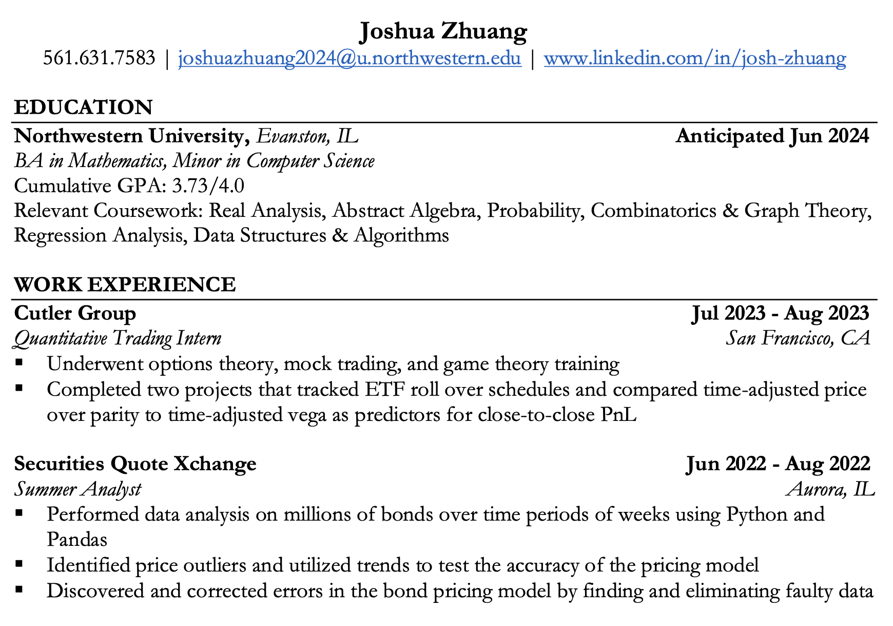

Welcome to My Digital Space
Here, creativity meets functionality, and innovation is just a scroll away.
A Glimpse into My Professional Journey
This snapshot of my resume offers a peek into my professional world. With a passion for clean code and user-centric design, I've dedicated my career to crafting digital experiences that leave a lasting impression.
Curious to learn more? Don't hesitate to explore my About page or reach out via the Contact section.